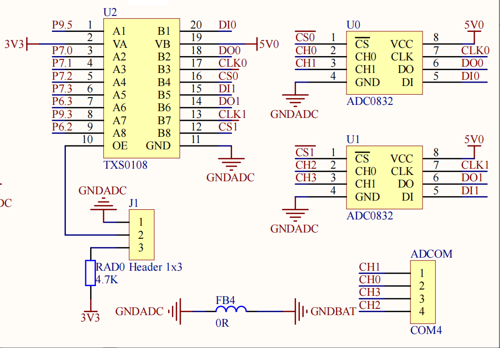
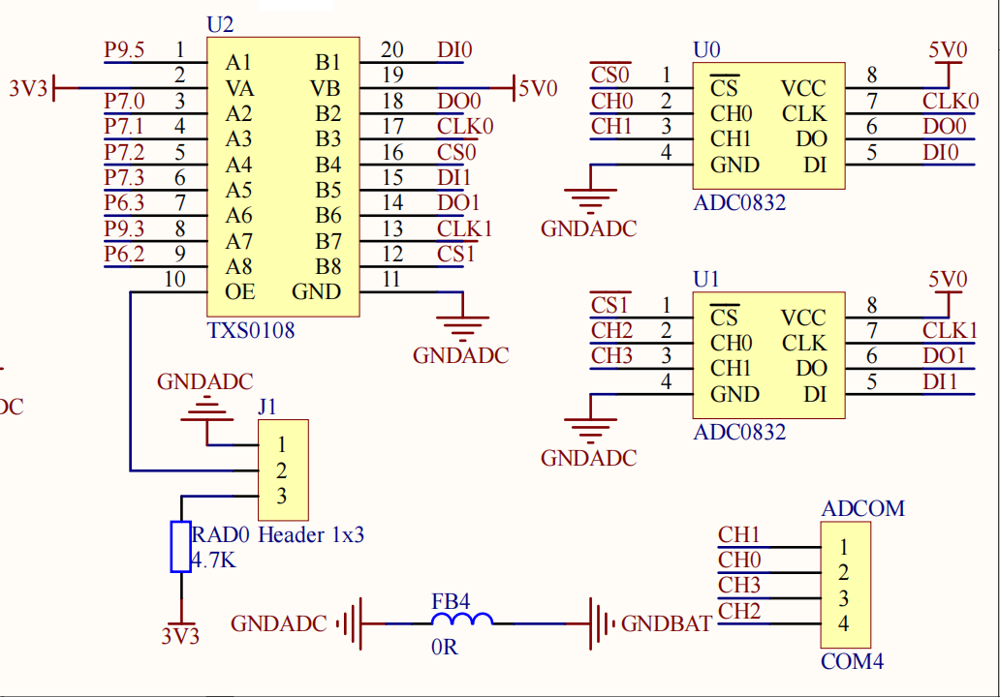

猫巾的博客
猫巾的博客
有关MSP432 ADC0832的函数库及头文件声明:exinADC0832.c exinADC0832.h。
本函数库适用于ADC0832，以2型板为例，其电路如图所示。若要使用ADC0832拓展AD口，则需要将J1跳线接至高电平。

相关重要函数说明：

ADC0832拓展AD口说明
有关MSP432 ADC0832的函数库及头文件声明:exinADC0832.c exinADC0832.h。
本函数库适用于ADC0832，以2型板为例，其电路如图所示。若要使用ADC0832拓展AD口，则需要将J1跳线接至高电平。

相关重要函数说明：
1.ADC0832初始化函数。
2.ADC0832读取一次单通道数据。
应用举例:
ADC0832读写例程
需要将开发板上J1跳线端接至H，来访问ADC0832
此例程将采集CH0-CH3的AD值，并在OLED上显示
2022年1月创 于 Github管理
http://hihii11.github.io/GWJ_BLOG.html
@猫巾